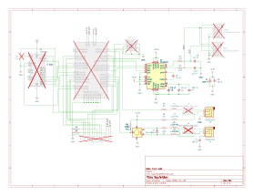
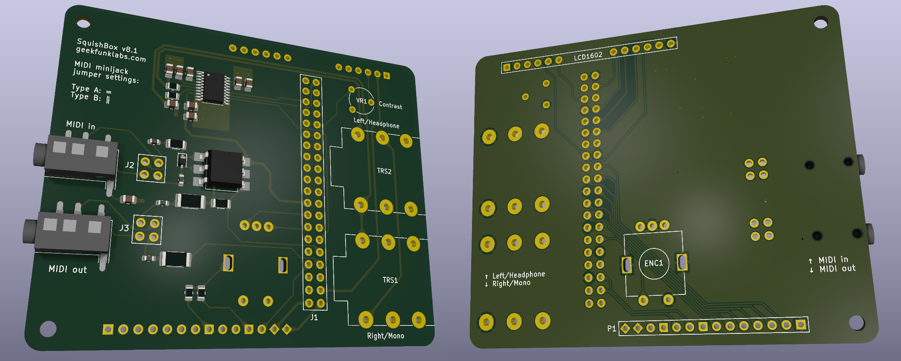

Technical Docs¶
This section collects miscellaneous hardware and software documentation for users modifying or servicing the SquishBox.
Schematic¶
The full schematic is available below. Through-hole components are crossed out to indicate they are sourced separately.

PDF version:
Download
This Interactive Bill of Materials allows part identification, placement lookup, and assembly cross-referencing.
PCB¶
Download manufacturing files from https://github.com/GeekFunkLabs/squishbox/tree/main/hardware/pcb/fabrication.

3D Render of SquishBox PCB with surface-mount components¶
P1 Header¶
Unused Raspberry Pi GPIO pins are broken out to header P1 for switches, LEDs, sensors, and other add-ons.
Pins 4 and 7 include built-in 1k pull-down resistors to ground, allowing LEDs to be connected directly.
P1 Pin |
Pad Shape |
Function |
|---|---|---|
1 |
diamond |
5V |
2 |
diamond |
3.3V |
3 |
circle |
GPIO4 |
4 |
notched |
GND via 1k |
5 |
circle |
GPIO2 (I2C SDA) |
6 |
circle |
GPIO3 (I2C SCL) |
7 |
notched |
GND via 1k |
8 |
circle |
GPIO23 |
9 |
circle |
GPIO24 |
10 |
circle |
GPIO10 |
11 |
circle |
GPIO25 |
12 |
circle |
GPIO9 |
13 |
circle |
GPIO11 |
14 |
square |
GND |
System Setup¶
The installer script configures a complete SquishBox system by performing the following tasks:
Installs system-level dependencies using Debian packages
Creates a Python virtual environment and installs SquishBox and optional Python components
Configures boot settings for supported hardware features such as audio devices and serial MIDI bridges
Applies user-level configuration:
Updates group membership and permissions
Enables required system services
Creates convenience command aliases
Command Aliases¶
The installer script creates several convenience aliases for working with the SquishBox environment:
squishbox-python- Runs Python inside the SquishBox virtual environmentsquishbox-pip- Installs or updates Python packages in the SquishBox virtual environmentsquishbox-launcher- Starts the SquishBox launcher in the current shellsquishbox-start- Starts the SquishBox background servicesquishbox-stop- Stops the SquishBox background servicesquishbox-status- Displays the status of the SquishBox background service
Updates¶
Most application updates can be installed directly through pip inside the SquishBox virtual environment:
squishbox-pip install -U squishbox
To also upgrade optional components and their dependencies:
squishbox-pip install -U squishbox[full]
The installer script may be run again at any time to apply system-level changes, install new dependencies, or update system configuration.